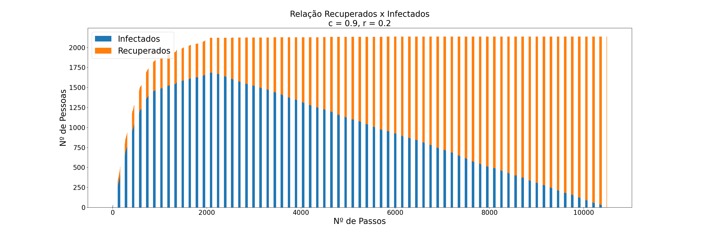

Para contruir uma simulação de contágio do Coronavírus na Região Metropolitana da Cidade de São Paulo, nos basemos no modelo epidemiológico SIR (Susceptible, Infected, Removed), considerando dois paramêtros: a probabilidade de contágio e a probabilidade de recuperação.
A fim de construir um modelo de contágio semelhante ao mencionado acima, utilizamos o terceiro cenário preparado e estudado anteriormente e utilizamos alguns algoritmos explorados em aula.
Primeiramente, ao carregar a componente gigante do grafo dos encontros, todos os vértices foram marcados como suscetíveis (S) e aleatoriamente foi escolhido um vértice inicial (uma pessoa) para ser marcada como infectada (I). Para manter a consistência dos testes, o vértice inicial foi mantido para todos os seguintes testes.
A partir disso, tendo uma pessoa infectada, foi executada uma Busca em Profundidade (Depth First Search, DFS) para percorrer todo o grafo, partindo do vértice infectado inicial. Dessa forma, os vértices adjascentes ao mesmo, foram as pessoas que tiveram contato com a infectada, portanto tendo uma certa probabilidade c de contágio. Uma pessoa infectada também poderia, eventualmente, se recuperar, com uma dada probabilidade r.
O algoritmo funciona da seguinte maneira:
Durante o processo de contágio, é computado o estado atual do algoritmo, salvando o número de pessoas infectadas e recuperadas que havia no momento. Cada estado computado é dito um passo que será utilizado para gerar um gráfico que mostra o desenvolvimento da doença. Nos gráficos (apresentados a seguir) é possível ver como a princípio a doença se espalha rapidamente e, de forma gradual, o número de recuperados começa a crescer ao passo que o número de infectados diminui.
Tomando 3 diferentes pares de parâmetros c e r, os seguintes resultados foram obtidos:


Pergunta realizada no enunciado da tarefa: Com os parâmetros c e r fixos, o que deve ocorrer nos diferentes cenários que investigamos?
Nos cenários com mais pessoas e mais conexões, o número de pessoas infectadas deve ser maior e consequentemente a recuperação de todos levará mais tempo.
O repositório está disponivel no GitHub em https://github.com/gmichelassi/ep-corona-aed2